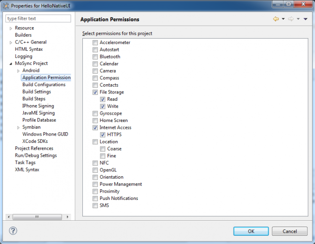

Some mobile devices (particularly Symbian and JavaME devices) require that your application has permission to access functions and services like Bluetooth, camera, contacts, Internet access, OpenGL, push notifications, sensors, and file storage. The MoSync SDK makes it easy to grant access to such services and functions.
An error on a device, such as the Symbian OS error "-46 KErrPermissionDenied", is a sure sign that your application is trying to access a device function or service without the necessary permissions.
You can set the access permissions that your app needs from the Properties menu for your project. Highlight your project in Project Explorer, then select Project > Properties > MoSync Project > Application Permissions.
Use the checkboxes to grant access to the device services that you application uses when it executes.

Click OK to apply the changes, then rebuild your project.
We strongly recommend that you grant your application just enough permissions to run properly, and no more. This is not only for the sake of security, but also to avoid annoying end-users who might decide that an application that has unnecessary permissions is suspicious and is doing stuff that it shouldn't.